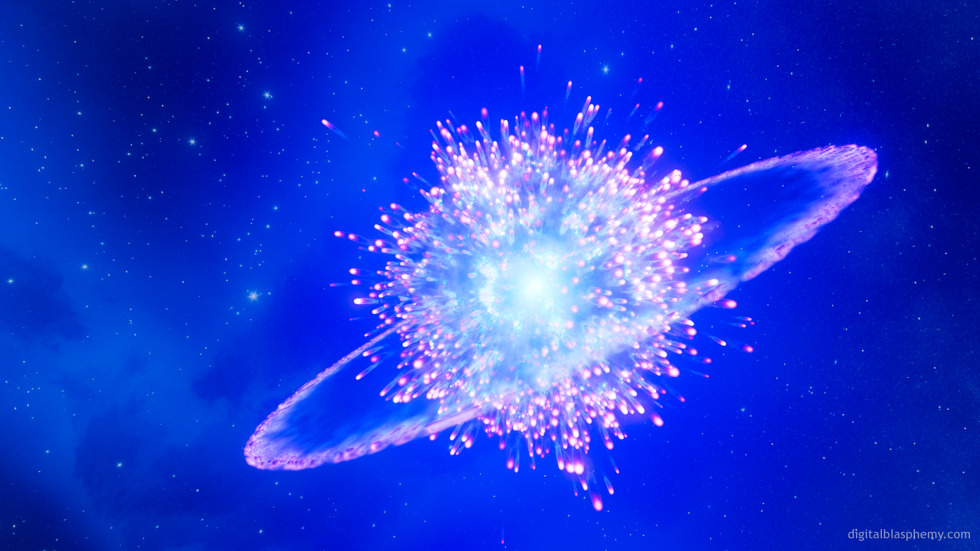

Uma supernova é a explosão energética e violenta de uma estrela massiva ao fim de sua vida, que colapsa sobre si mesma devido à vitória da gravidade sobre as forças internas
Durante esse evento, que pode brilhar mais do que uma galáxia inteira, elementos químicos pesados são criados e dispersos no universo, formando a matéria-prima para a criação de novas estrelas, planetas e, eventualmente, vida.
- Tipo I: Ocorre em sistemas binários onde uma anã branca rouba matéria de uma estrela companheira, o que eventualmente leva ao seu colapso e explosão.
- Tipo II: Acontece no fim da vida de estrelas massivas que, após o colapso de seu núcleo, explodem.

a Nova de Tycho (SN 1572)
A Supernova de Tycho (SN 1572) foi uma explosão estelar do Tipo Ia, observada por diversos astrônomos em 1572, incluindo o dinamarquês Tycho Brahe, que a catalogou como uma "nova estrela" no céu, na constelação de Cassiopeia. A supernova era tão brilhante quanto Vênus, visível a olho nu durante o dia e permaneceu luminosa até 1574, e suas observações foram cruciais para desafiar a visão aristotélica do universo imutável.
O que foi a Nova de Tycho?
- Um evento cósmico raro: SN 1572 é uma das poucas supernovas visíveis a olho nu registradas na Via Láctea.
- Uma explosão de anã branca: A supernova é do tipo Ia, que ocorre quando uma estrela anã branca em um sistema binário acreta material de uma estrela companheira, resultando em uma explosão termonuclear que a destrói.

- Desafia a física antiga: Antes de 1572, acreditava-se que o firmamento era imutável, mas a aparição de uma nova estrela (SN 1572) demonstrou o contrário.
Medições precisas: Tycho Brahe fez medições precisas do brilho do objeto e confirmou que não era um fenômeno próximo, mas um evento celeste distante, mudando a astronomia para sempre.
Revolução na astronomia: As observações de Tycho sobre essa estrela, comparadas com as de outros astrônomos, mostraram que o universo era dinâmico, e não estático